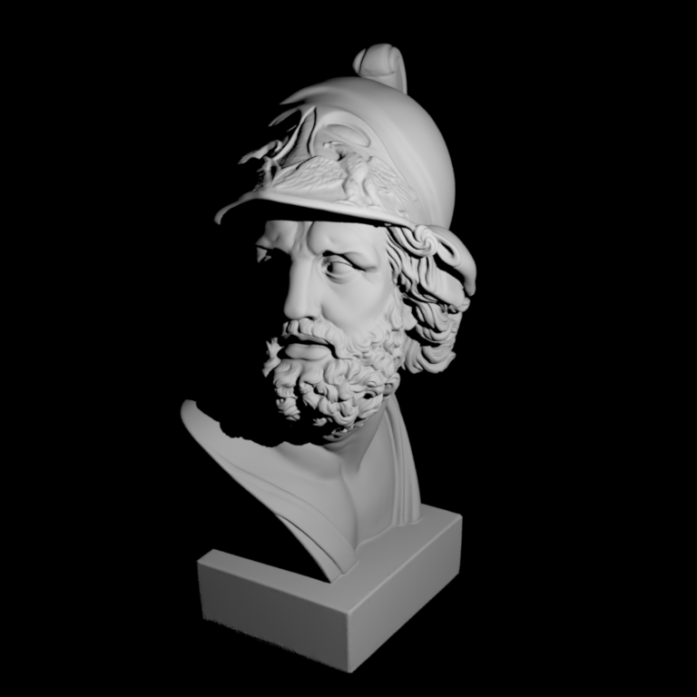
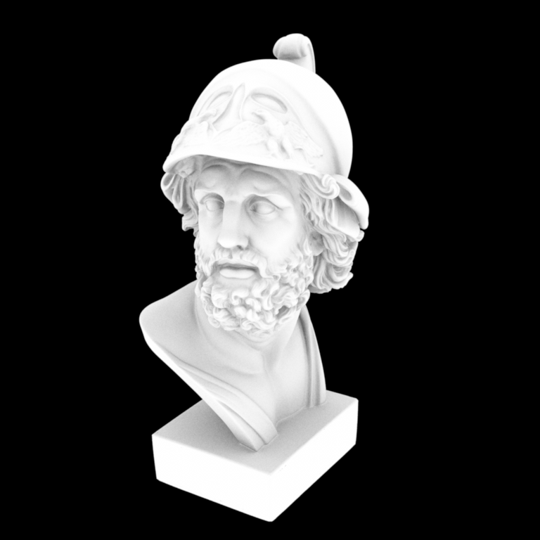
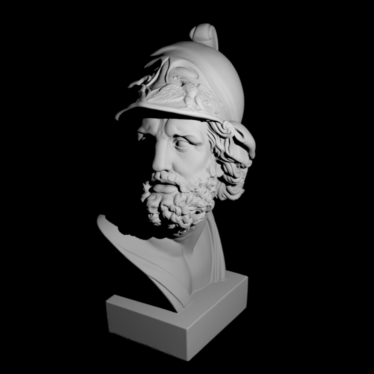
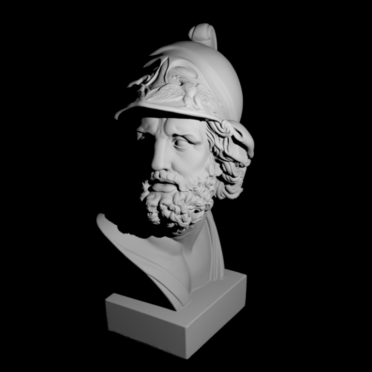

**Programming Assignment 3 - Hao Sun**
Feedback
========
* I spent seven hours on this assignment totally, including one hours for sample warping part, one hour for rendering, three hours for hacker points and two hours for report.
* I think this assignment is not too difficult, but I do believe that the $ \chi^2 $ test for hack points is badly implemented. The problem is that bit image signal has too high frequency, which is higher than the test can handle. So we need to do something for pdf to match the test, and it needs knowledge in other fields.
Part 1: Monte Carlo Sampling
===========================
Tent
--------------------------
It's clear that $ p_1(x) $ and $ p_1(y) $ don't influence each other, so one choice for this sampling is that $ wrap((x, y)) = (P_1^{-1}(x), P_1^{-1}(y)) $. As we know $ p_1(x) = \begin{cases}
1-|x|, & -1\le x\le 1\\
0,&\text{otherwise}\\
\end{cases} $
So $ P_1(x) = \begin{cases}
x + \frac{1}{2} x^2 + c_1, & -1\le x < 0 \\
x - \frac{1}{2} x^2 + c_2, & 0\le x\le 1\\
0,&\text{otherwise}\\
\end{cases} $
The boundary conditions are $ P_1(-1) = 0 $, $ P_1(1) = 1 $ and continuity conditions, so we can get that $ c_1 = \frac{1}{2} $ and $ c_2 = \frac{1}{2} $.
Then we get $ P_1(x) = \begin{cases}
x + \frac{1}{2} x^2 + \frac{1}{2}, & -1\le x < 0 \\
x - \frac{1}{2} x^2 + \frac{1}{2}, & 0\le x\le 1\\
0,&\text{otherwise}\\
\end{cases} $
\begin{equation*}
P_1^{-1}(t) = \begin{cases}
-1 + \sqrt{2t}, & 0\le t < \frac{1}{2} \\
1 - \sqrt{2(1-t)}, & \frac{1}{2}\le t\le 1\\
0,&\text{otherwise}\\
\end{cases}
\end{equation*}

Uniform Disk
-----------------------------------------------------------
\begin{equation*}
p(x, y) = \begin{cases}
\frac{1}{\pi}, & x^2 + y^2 \le 1 \\
0, & \text{otherwise} \\
\end{cases}
\end{equation*}
Wrap function is $$ \theta = 2 \pi x,\ r = \sqrt{y}, \text{ and } wrap((x, y)) = (r \sin{\theta}, r \cos{\theta}) $$

Uniform Sphere
-----------------------------------------------------------
\begin{equation*}
p(x, y, z) = \begin{cases}
\frac{1}{4\pi}, & x^2 + y^2 + z^2 \le 1 \\
0, & \text{otherwise} \\
\end{cases}
\end{equation*}
Wrap function is $$ \theta = 2 \pi x,\ h = 2 y - 1,\ r = \sqrt{1 - h^2}, \text{ and } wrap((x, y)) = (r \cos{\theta}, r \sin{\theta}, h) $$

Uniform Hemisphere
-----------------------------------------------------------
\begin{equation*}
p(x, y, z) = \begin{cases}
\frac{1}{2\pi}, & x^2 + y^2 + z^2 \le 1, \text{and} z \ge 0\\
0, & \text{otherwise} \\
\end{cases}
\end{equation*}
Wrap function is $$ \theta = 2 \pi x,\ h = y,\ r = \sqrt{1 - h^2}, \text{ and } wrap((x, y)) = (r \cos{\theta}, r \sin{\theta}, h) $$

Cosine Hemisphere
-----------------------------------------------------------
It's clear that $$ \cos{\theta} = z $$
\begin{equation*}
p(x, y, z) = \begin{cases}
\frac{z}{\pi}, & x^2 + y^2 + z^2 \le 1, \text{and} z \ge 0\\
0, & \text{otherwise} \\
\end{cases}
\end{equation*}
As p is determined by z, we can ignore x and y first. So $$ p_1(z) = 2z \Rightarrow P_1(z) = z^2 \Rightarrow P_1^{-1}(t) = \sqrt{t} $$
Wrap function is $$ \theta = 2 \pi x,\ h = \sqrt{y},\ r = \sqrt{1 - h^2}, \text{ and } wrap((x, y)) = (r \cos{\theta}, r \sin{\theta}, h) $$

Two simple rendering algorithms
===================================
Part 2.2: Point lights
----------------------------------
Actually I find a bug in my previous assignment, that when original point of a ray is inside a boundingbox, it should be thought as intersection. So I also submit 'accel.cpp'.

Part 2.1: Ambient occlusion
---------------------------------
$$ L_{full}(x) = \int_{H^2(x)} \frac{\cos{\theta}}{\pi} d\omega = 1 $$
So, the average Li should be 1.

Hacker Points: Hierarchical Sample Warping
=============================================
* One important thing for this sampling is that the direction of y axis in image and that of 'warptest' are different, so we need to flip it.
* I add a parameter for 'warptest'. For example, to use 'ttt.exr', I need to run 'warptest ttt.ext', then I can use hierarchical sample under 'Hierarchical'.
* One of the problem is that resolution of the input image is $ 2^M \times 2^M $ , while the previous test resolution in 'warptest' is 51 * 51. Although we use pdf to calculte probability for every cells, it's not enough to sample on the image because 51 is much less than 512. So I change resolution of test for Hierarchical to 32 * 32, which allows us to merge input images and make frequency of image signal lower.


 
